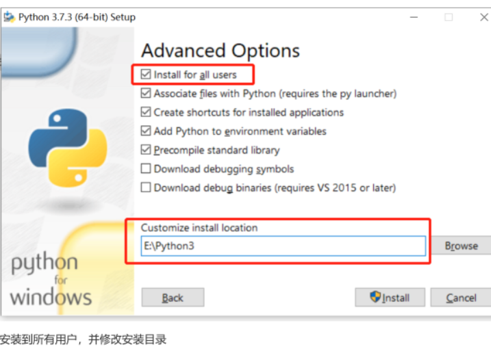
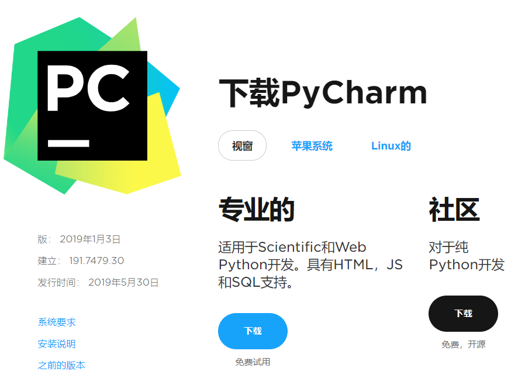
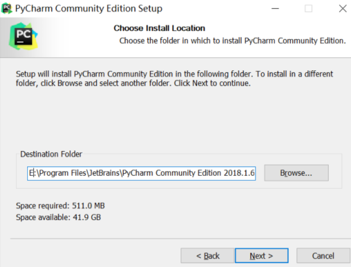
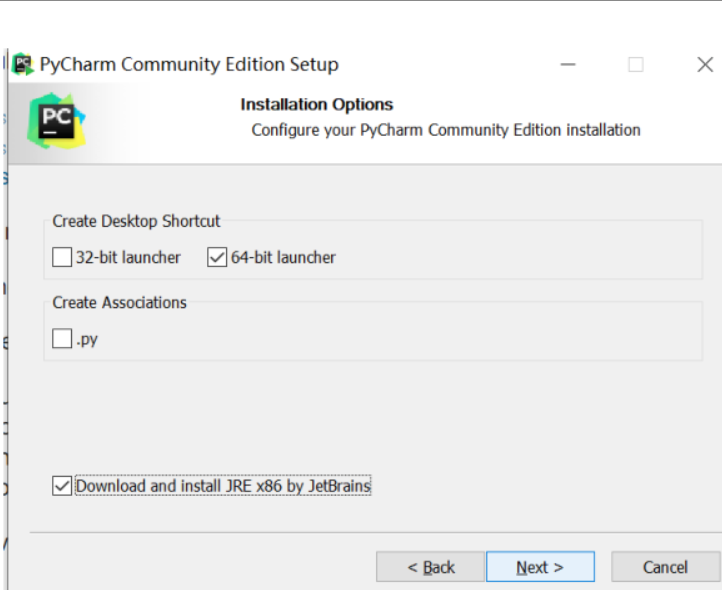

1.python介绍
Python（英国发音：/ˈpaɪθən/ 美国发音：/ˈpaɪθɑːn/）是一种广泛使用的解释型、高级编程、通用型编程语言，由吉多、范罗苏姆创造，第一版发布于1991年。可以视之为一种改良（加入一些其他编程语言的优点，如面向对象）的lisp。Python的设计哲学强调代码的可读性和简洁的语法（尤其是使用空格缩进划分代码块，而非使用大括号或者关键词）。相比于C++或Java，Python让开发者能够用更少的代码表达想法。不管是小型还是大型程序，该语言都试图让程序的结构清晰明了。与Scheme、Ruby、Perl、Tcl等动态类型编程语言一样，Python拥有动态类型系统和垃圾回收功能，能够自动管理内存使用，并且支持多种编程范式，包括面向对象、命令式、函数式和过程式编程。其本身拥有一个巨大而广泛的标准库。
2.python特点
优点
简单：Python是一种代表简单主义思想的语言。阅读一个良好的Python程序就感觉像是在读英语一样。它使你能够专注于解决问题而不是去搞明白语言本身。
两种选择，第一种系统选择；第二种自动，将勾选添加环境变量，就后续不用继续添加。next。

然后选择install安装。安装完成后先不要关闭，点击disable……同意是。
安装集成开发环境PyCharm
PyCharm 是由 JetBrains 打造的一款 Python IDE，支持 macOS、 Windows、 Linux 系统。PyCharm 功能 : 调试、语法高亮、Project管理、代码跳转、智能提示、自动完成、单元测试、版本控制……
PyCharm下载地址：https://www.jetbrains.com/pycharm/download/#section=windows

选择社区版，进行下载。下载好后，直接运行安装。

选择相应的安装目录，next

finish。双击运行。在Complete Installation处选择Do not import settings，ok。至此安装完成。
4.linux下开发环境搭建
上传并解压对应版本安装包：tar xvf Python-3.7.3.tar.xz
安装python3
yum install gcc gcc-c++ make zlib* -y
yum install libffi-devel -y
cd 进入解压后的Python所在的目录中
./configure --prefix=/usr/bin/local/python3
make && make install
配置执行文件路径
cd /usr/bin
mv /usr/bin/python /usr/bin/pythonbak
ln -fs /usr/local/python3/bin/python3 /usr/bin/python3
修改yum配置
vim /usr/bin/yum,在第一行后面的python后加上2
vim /usr/libexec/urlgrabber-ext-down，同上
5.虚拟环境搭建
什么是python虚拟环境？
通俗的来讲，虚拟环境就是从电脑独立开辟出来的环境，相当于一个副本或备份，在这个环境你可以安装私有包，而且不会影响系统中安装的全局Python解释器。
为什么要用虚拟环境？
在实际项目开发中，我们通常会根据自己的需求去下载各种相应的框架库，如Scrapy、Beautiful Soup等，但是可能每个项目使用的框架库并不一样，或使用框架的版本不一样，这样需要我们根据需求不断的更新或卸载相应的库。直接怼我们的Python环境操作会让我们的开发环境和项目造成很多不必要的麻烦，管理也相当混乱。如以下场景：
场景1：项目A需要某个框架1.0版本，项目B需要这个库的2.0版本。如果没有安装虚拟环境，那么当你使用这两个项目时，你就需要来回的卸载安装了，这样很容易就给你的项目带来莫名的错误；
场景2：公司之前的项目需要python2.7环境下运行，而你接手的项目需要在python3环境中运行，想想就应该知道，如果不使用虚拟环境，这这两个项目可能无法同时使用，使用python3则公司之前的项目可能无法运行，反正则新项目运行有麻烦。而如果虚拟环境可以分别为这两个项目配置不同的运行环境，这样两个项目就可以同时运行。
windows下安装
运行cmd，输入pip install virtualenv。如果版本环境出现问题，尝试输入python -m pip install --upgrade pip。出现successful，表示成功。
新建虚拟环境
virtualenv scrapytest （没有报错，显示done成功，然后在c盘对应的文件下查看是否创建成功）
virtualenv -p C：……（此处为安装python的位置，包含其启动执行文件） scrapytest（此为刚创建的虚拟环境的名字）
运行为：cd 进入到之前创建的虚拟环境的目录下activate.bat，结束为deactivate.bat
linux安装
yum install python-virtualenv
virtualenv py2
virtualenv -p /usr/local/bin/python3 py3
cd 进入创建的py2
source activate
deactivate
6.基本语法
在Python中模块分为以下几种：
系统内置模块，例如：sys、time、json模块等等；
自定义模块，自定义模块是自己写的模块，对某段逻辑或某些函数进行封装后供其他函数调用。注意：自定义模块的命名一定不能和系统内置的模块重名了，否则将不能再导入系统的内置模块了。例如：自定义了一个sys.py模块后，再想使用系统的sys模块是不能使用的；
第三方的开源模块：这部分模块可以通过pip install进行安装，有开源的代码；
执行过程
Python在执行时，首先会将.py文件中的源代码编译成Python的byte code（字节码），然后再由Python Virtual Machine（Python虚拟机）来执行这些编译好的byte code。这种机制的基本思想跟Java，.NET是一致的。然而，Python Virtual Machine与Java或.NET的Virtual Machine不同的是，Python的Virtual Machine是一种更高级的Virtual Machine。这里的高级并不是通常意义上的高级，不是说Python的Virtual Machine比Java或.NET的功能更强大，而是说和Java 或.NET相比，Python的Virtual Machine距离真实机器的距离更远。或者可以这么说，Python的Virtual Machine是一种抽象层次更高的Virtual Machine。基于C的Python编译出的字节码文件，通常是.pyc格式。除此之外，Python还可以以交互模式运行，比如主流操作系统Unix/Linux、Mac、Windows都可以直接在命令模式下直接运行Python交互环境。直接下达操作指令即可实现交互操作。
编译与解释的关系
首先，我们编程都是用的高级语言(写汇编和机器语言的大牛们除外)，计算机不能直接理解高级语言，只能理解和运行机器语言，所以必须要把高级语言翻译成机器语言，计算机才能运行高级语言所编写的程序。翻译的方式有两种，一个是编译，一个是解释。两种方式只是翻译的时间不同。
编译型语言 写的程序执行之前，需要一个专门的编译过程，通过编译系统（不仅仅只是通过编译器，编译器只是编译系统的一部分）把高级语言翻译成机器语言，把源高级程序编译成为机器语言文件。以后就可以直接运行而不需要编译了，因为翻译只做了一次，运行时不需要翻译，所以编译型语言的程序执行效率高，但也不能一概而论，部分解释型语言的解释器通过在运行时动态优化代码，甚至能够使解释型语言的性能超过编译型语言。
解释型语言 写的程序不需要编译。解释型语言在运行的时候才翻译，比如VB语言，在执行的时候，专门有一个解释器能够将VB语言翻译成机器语言，每个语句都是执行的时候才翻译。这样解释型语言每执行一次就要翻译一次，效率比较低。
编译型与解释型，两者各有利弊 。前者由于程序执行速度快，同等条件下对系统要求较低，因此像开发操作系统、大型应用程序、数据库系统等时都采用它，像C/C++、Pascal/Object Pascal（Delphi）等都是编译语言，而一些网页脚本、服务器脚本及辅助开发接口这样的对速度要求不高、对不同系统平台间的兼容性有一定要求的程序则通常使用解释性语言，如JavaScript、VBScript、Perl、Python、Ruby、MATLAB 等等。